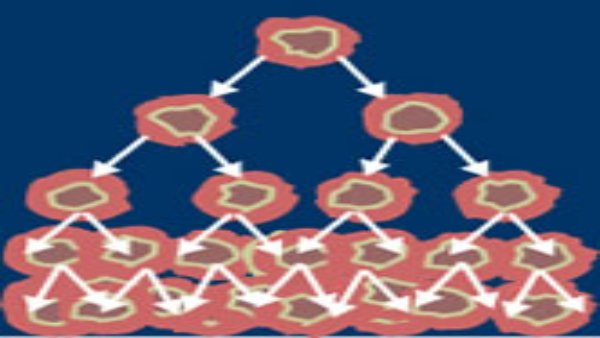
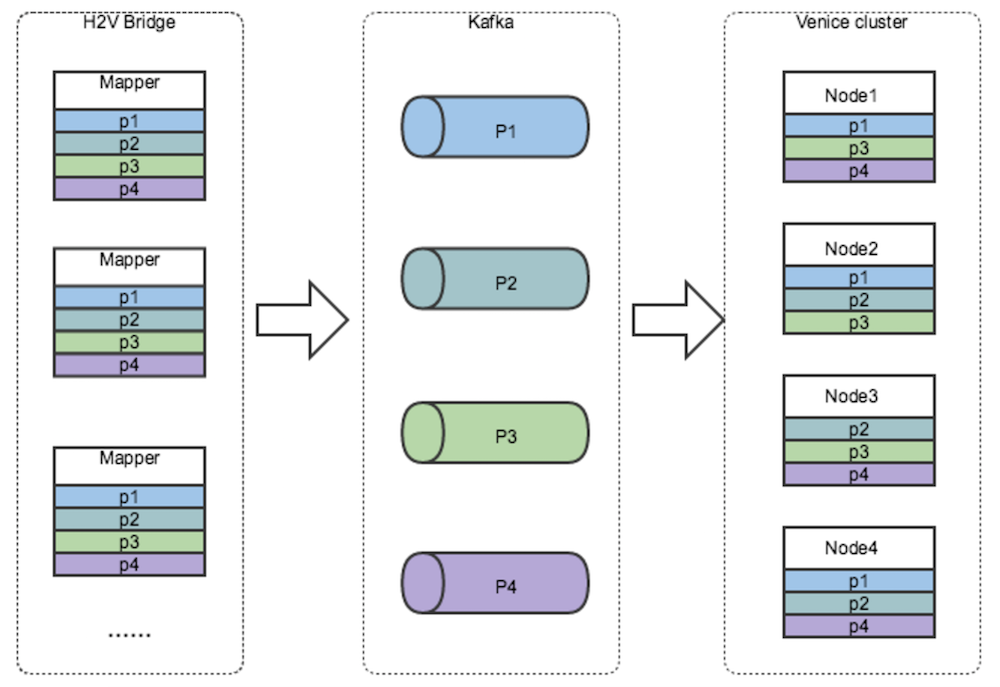

Some Recent Major Projects I've Worked On

|
TorMentorA distributed collaborative anonymous machine learning system that leverages Tor, with stronger privacy guarantees than modern solutions. This includes a side project that involves using gradients only for sybil detection in federated learning. |
|  |
InsuLearnA system for training and aggreagating machine learning models on private medical data. Nodes locally train and models, which are then aggregated at the server. Raft consensus protocol is used to ensure consensus on model commits. |

|
Distributed Clocks A vector clock instrumentation library. Distributed systems are difficult to analyze, and this project involves a suite of libraries for maintaining vector clocks and visualizing distributed communication. Includes support for Go, C, C++ and Java.
|

|
Samza StatServer @ Linkedin A system for collecting and aggregating user statistics for online machine learning, with a major emphasis on low read latency. Leverages Apache Kafka and Samza. Built on an internship at Linkedin in 2015.
|
|  |
Venice @ Linkedin Developed an early prototype of Linkedin's next generation derived data store. Leverages Apache Kafka and Voldemort DB. Includes a Hadoop to Venice data loading client. Built on an internship at Linkedin in 2014.
|